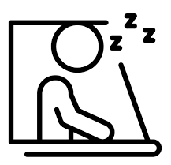
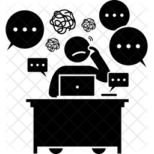

Спешка
« Кто спешит - тот людей смешит ». Этой фразой можно охарактерезовать некоторую часть моих сокурсников.
Есть ребята которые уже кое-что знают и в "своей голове" опережают программу курса. Они желают выучить все и сразу.
Цель отличная,но вовремя ли... А есть другая часть студентов,которые совсем новички и сегодня только создали свой
первый index.html. Не надо спешить, потому что тогда знания будут поверхностные, а тем кто уже что-то знает лучше закрепить материал.
Вопросы не по теме

Эта ошибка тесно связна с предыдущей. Собственно те люди,кто спешат, очень часто задают вопросы которые
не касаются сегодняшней темы занятия. Или вопросы которые вовсе не входят в программу курса (её можно посмотреть на сайте).
Наш наставник и менторы курса настоятельно рекомендуют придерживаться программы курса, идти шаг за шагом и не бежать впереди паравоза.
Повторящиеся вопросы

Очень много вопросов которые задаются не один раз или же похожие друг с другом за смыслом.
Внимательно слушаем Жеку, читаем чат, объявления и домашку. Если что-то не понятно, пересмотрели урок,прослушали тему
еще раз,и уже потом ,если не разобрались, спрашиваем. Давайте не будем бесить Жеку.
Невнимательность

Знания которые нам даёт Жека - бесценные. 90% нас с вами принимало участие в конкурсе и оставляли свой
комментарий под видео, в котором описывали почему мы хотим получить этот курс. Вспомните еще раз почему. И вот мы здесь.
Собрали всю волю в кулак, целеустремленность, внимательность и перевернули свое понимание вёрстки сног на голову.
И тогда из нас получатся крутые специалисты. Мы будем уметь делать такую вёрстку:
- Кроссбраузерную
- Семантическую
- Валидную
- Адаптивную
Отвлечения Жени от ведения занятия
Все выше перечисленые ошибки формируют эту. Своими вопросами, невнимательностю и особенно флудом в чате мы отвелкаем Жеку от занятия.
Ему приходится отвлекатся, терять время, сбиваться со своего плана ведения занятия. Это в том числе тормозит и наш с вами прогрес.
Давайте будем уважать друг друга и жить дружно.